"Beyond The Danube" is a gamification project centered around the historical figure of Luigi Ferdinando Marsili and the museum dedicated to him located at Via Zamboni 33, Palazzo Poggi. Given that Marsili's life was rich with diverse experiences, defining him solely as an engineer, geographer, or scientist would be an understatement. That is why we chose to bring his story to life through the elements he bestowed upon the Academy Of Sciences Of Bologna, elements which come from his immense collection. Each one is a unique symbol of his incredible journey.
The photos which you are going to see throughout the whole project come from both us, taken at Marsili's Museum, and Wikimedia Commons.
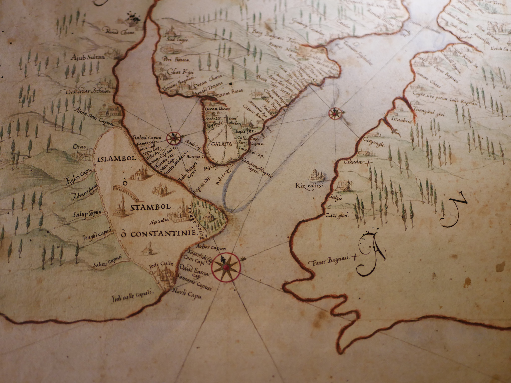
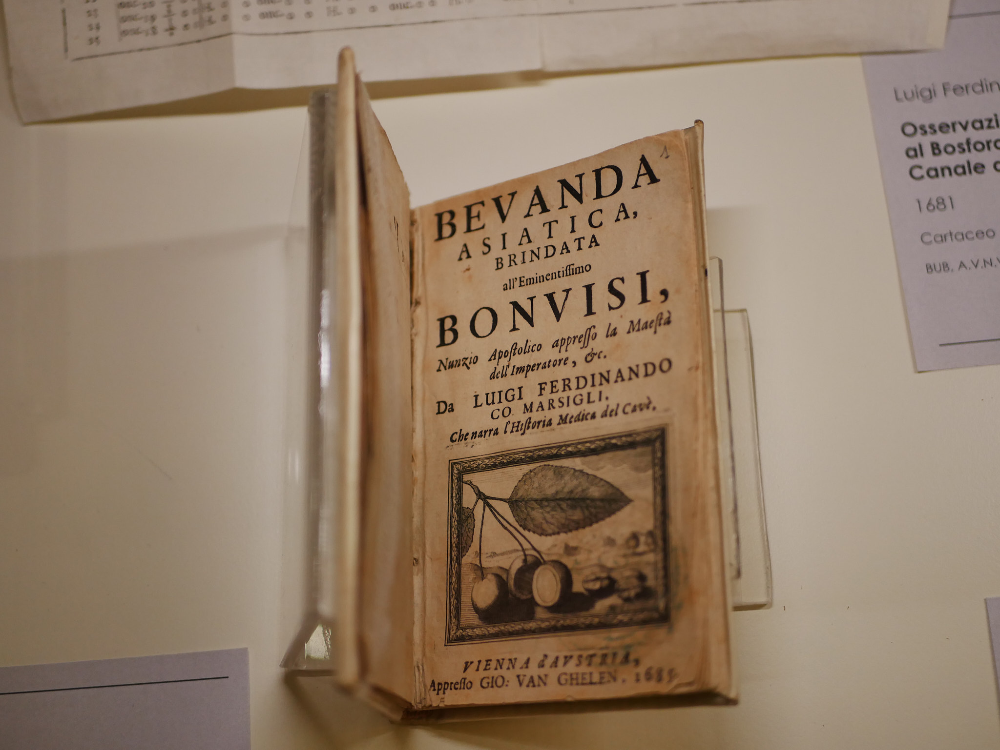
Marsili's Museum was established in 1930 to honour the bicentenary of his death, it is located at Palazzo Poggi, Via Zamboni 33, Bologna. The museum's layout offers a small journey into the life of this extraordinary soldier and eclectic scholar through a rich collection of autographed manuscripts, including his personal autobiography, fascinating specimens like corals and unique 17th-century maps such as the topography of Armenian places of worship.
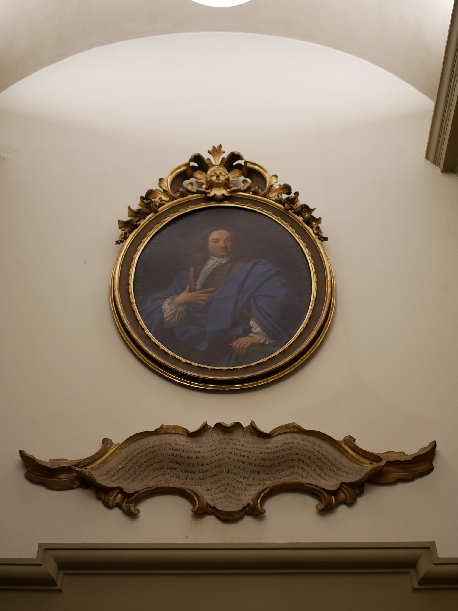
By using the Perceive CoDesign Tool we mapped the goals that would shape every layer of the experience, from what the institution needs to what the visitor feels.
This experience is designed for complete newcomers who arrive with no prior knowledge of Marsili and leave with a genuine understanding of who he was. We identified two audience profiles: Leonardo, a 17-year-old student from Bologna seeking interactive engagement with history, and Thomas, a 52-year-old architect visiting the city who prefers immersive, time-efficient cultural experiences. Rather than passively reading labels, both take an active role in the experience: they adopt a perspective, listen to narrated scenes, make choices, complete light tasks, and assemble Marsili's story for themselves as they move through it.
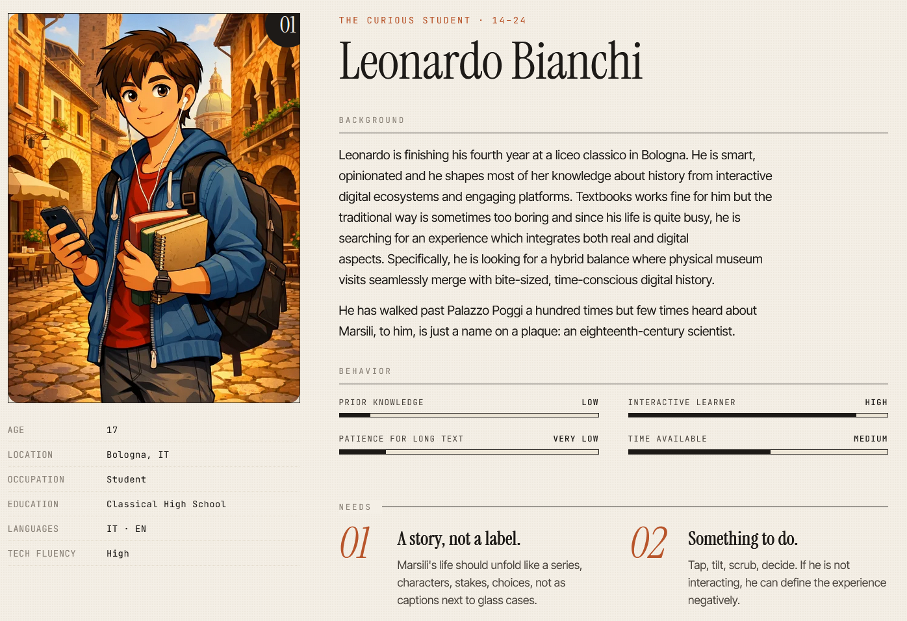
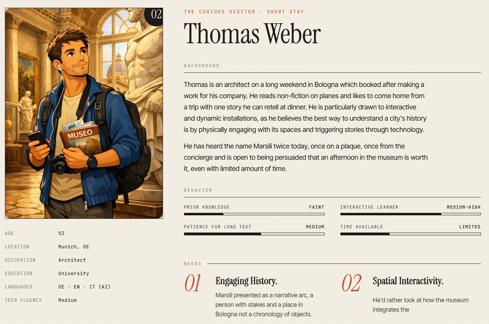
Then we defined our institutional goals. The primary aim is higher visitor satisfaction, visitors should leave feeling the visit was genuinely worthwhile and memorable. Supporting this is the ambition to increase educational activities, adding an interactive layer to a collection that currently relies on static panels while also increasing visitor participation, involving visitors through feedback, challenges, and active engagement with the experience.
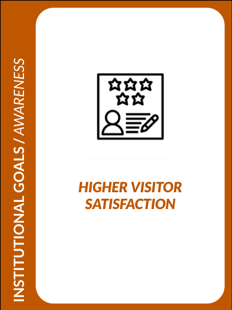
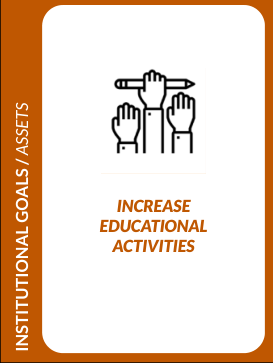
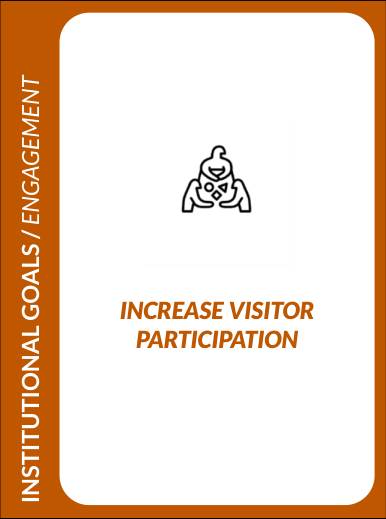
Right after, we shaped an experience where visitors adopt a role and make decisions that affect their journey through the story. The experience is delivered online, with audio narration bringing Marsili's world to life through an authenticity-driven approach that engages sight and sound.
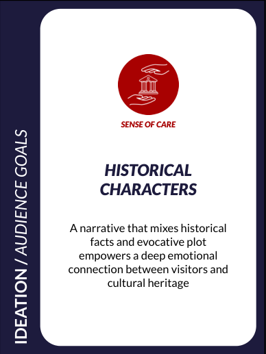
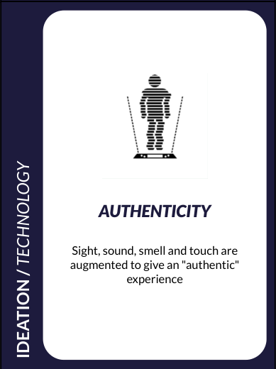
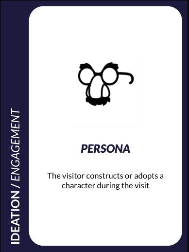
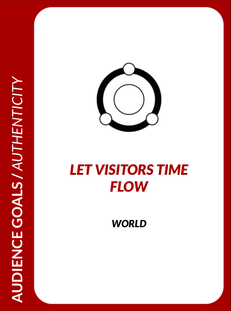
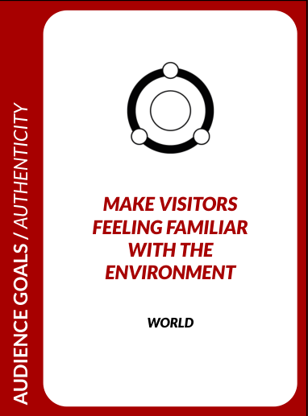
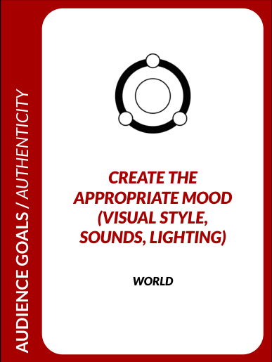
At the emotional level, the experience is built around historical characters and theory of mind storytelling, inviting visitors not just to follow Marsili's story, but to understand the motivations and feelings behind his choices.
The design is pretty straightforward, the visitors arrive and access the experience through a QR Code by using their personal devices such as smartphones, tablets or computers, then they live immersive experiences by travelling back in the past through Marsili's life episodes and learn by solving minigames.
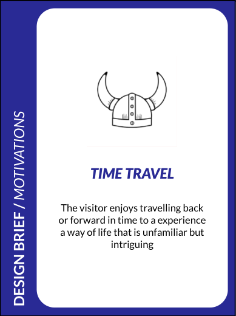
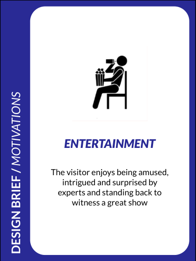
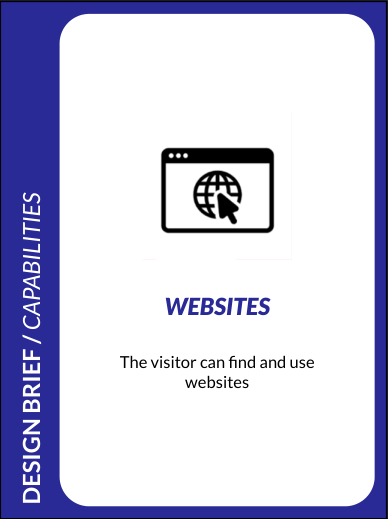
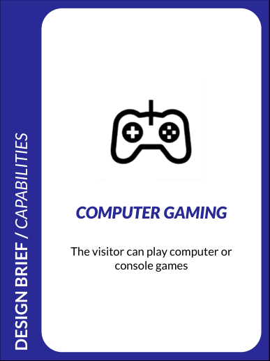
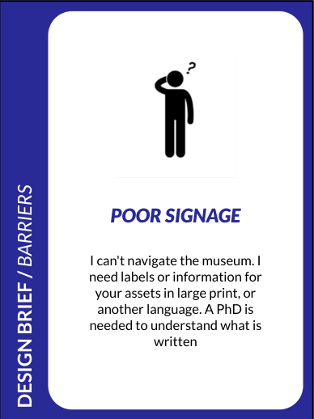
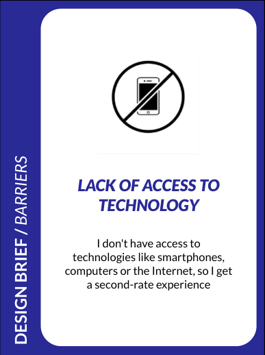
The main barriers identified were poor signage and unequal access to technology, which pushed us toward a design that is self-explanatory and device-flexible.
As the design took shape, three critical challenges emerged. The balance between education and entertainment was the first pressure point, an experience that leans too far in either direction risks losing its audience, so every interaction was designed to carry both cognitive and emotional weight simultaneously. The second and third challenges both converged on the same concern: accessibility, whether in terms of the physical environment or the conditions of attendance, the design had to guarantee that no visitor would find themselves excluded from any part of the experience.
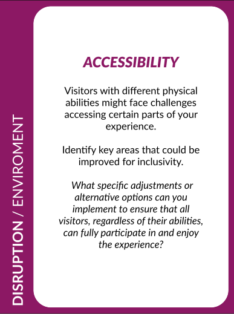
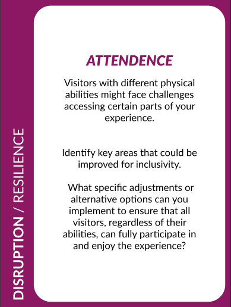
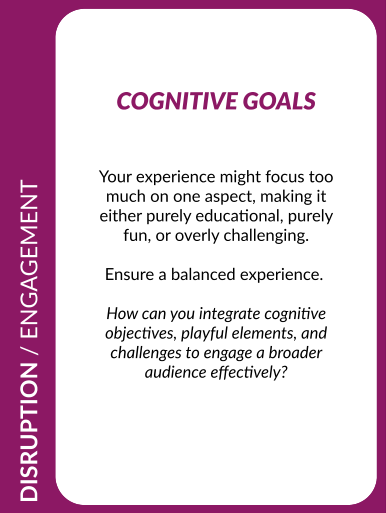
Based on the design framework above, we developed a prototype in Figma that illustrates the core interaction concepts of the experience: the QR code entry point that launches the visitor's journey, and two minigame interfaces designed to test engagement and learning through play. You can explore the prototype on Figma.
The experience itself takes the form of an interactive narrative authored in Twine and delivered directly on the visitor's own device. Upon arriving at the museum, visitors scan a QR code that launches a first-person story in which Marsili himself recounts his life. The narrative is divided into fourteen short chapters.
Audio narration, generated through ElevenLabs, carries the voice of Marsili and the ambient atmosphere of each scene, reducing the reliance on reading and making his world feel present. At key moments, visitors face choices that shape the path of the story, giving a genuine sense of authorship over the journey. The experience runs entirely in a browser, requires no download, and works on smartphones, tablets, and computers.
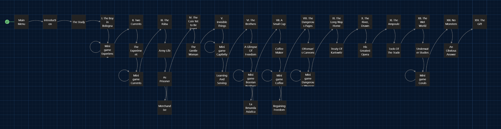
Our Twine map